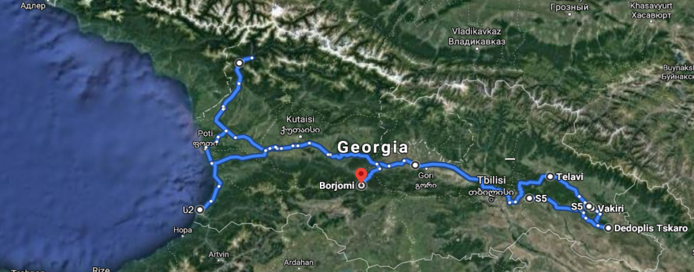

ადგილი ერთი
ლორემ იპსუმ საბეჭდი და ტიპოგრაფიული ინდუსტრიის უშინაარსო ტექსტია. იგი სტანდარტად 1500-იანი წლებიდან იქცა.
ლორემ იპსუმ საბეჭდი და ტიპოგრაფიული ინდუსტრიის უშინაარსო ტექსტია. იგი სტანდარტად 1500-იანი წლებიდან იქცა, როდესაც უცნობმა მბეჭდავმა ამწყობ დაზგაზე წიგნის საცდელი ეგზემპლარი დაბეჭდა. მისი ტექსტი არამარტო 5 საუკუნის მანძილზე შემორჩა. არამედ მან დღემდე, ელექტრონული ტიპოგრაფიის დრომდეც უცვლელად მოაღწია. განსაკუთრებული პოპულარობა მას 1960-იან წლებში გამოსულმა ლეტრასეტ-ის ცნობილმა ტრაფარეტებმა მოუტანა, უფრო მოგვიანებით კი — ალდუს პაგემაკერ-ის ტიპის საგამომცემლო პროგრამებმა, რომლებშიც ლორემ იპსუმ-ის სხვადასხვა ვერსიები იყო ჩაშენებული.
ლორემ იპსუმ-ის გამოყენებით ვღებულობთ იმაზე მეტ-ნაკლებად სწორი გადანაწილების ტექსტს, ვიდრე ერთიდაიგივე გამეორებადი სიტყვებია ხოლმე. შედეგად, ტექსტი ჩვეულებრივ ინგლისურს გავს, მისი წაითხვა კი შეუძლებელია.დღეს უამრავი პერსონალური საგამომცემლო პროგრამა და ვებგვერდი იყენებს ლორემ იპსუმ-ს, როგორც დროებით ტექსტს წყობის შესავსებად; ლორემ იპსუმ-ის მოძებნისას კი საძიებო სისტემები ბევრ დაუსრულებელ გვერდს გვიჩვენებენ.
პასაჟიდან და გადაწყვიტა მოეძებნა იგი კლასიკურ ლიტერატურაში. ძიება შედეგიანი აღმოჩნდა — ტექსტი ლორემ იპსუმ გადმოწერილი ყოფილა ციცერონის “დე ფინიბუს ბონორუმ ეტ მალორუმ”-ის 1.10.32 და 1.10.33 თავებიდან. ეს წიგნი ეთიკის თეორიის ტრაქტატია, რომელიც რენესანსის პერიოდში ძალიან იყო გავრცელებული. ლორემ იპსუმ-ის პირველი ხაზი, “ლორემ იპსუმ დოლერ სიტ ამეტ…” სწორედ ამ წიგნის 1.10.32 თავიდანაა.
ლორემ იპსუმ საბეჭდი და ტიპოგრაფიული ინდუსტრიის უშინაარსო ტექსტია. იგი სტანდარტად 1500-იანი წლებიდან იქცა.

ლორემ იპსუმ საბეჭდი და ტიპოგრაფიული ინდუსტრიის უშინაარსო ტექსტია. იგი სტანდარტად 1500-იანი წლებიდან იქცა.

ლორემ იპსუმ საბეჭდი და ტიპოგრაფიული ინდუსტრიის უშინაარსო ტექსტია. იგი სტანდარტად 1500-იანი წლებიდან იქცა.